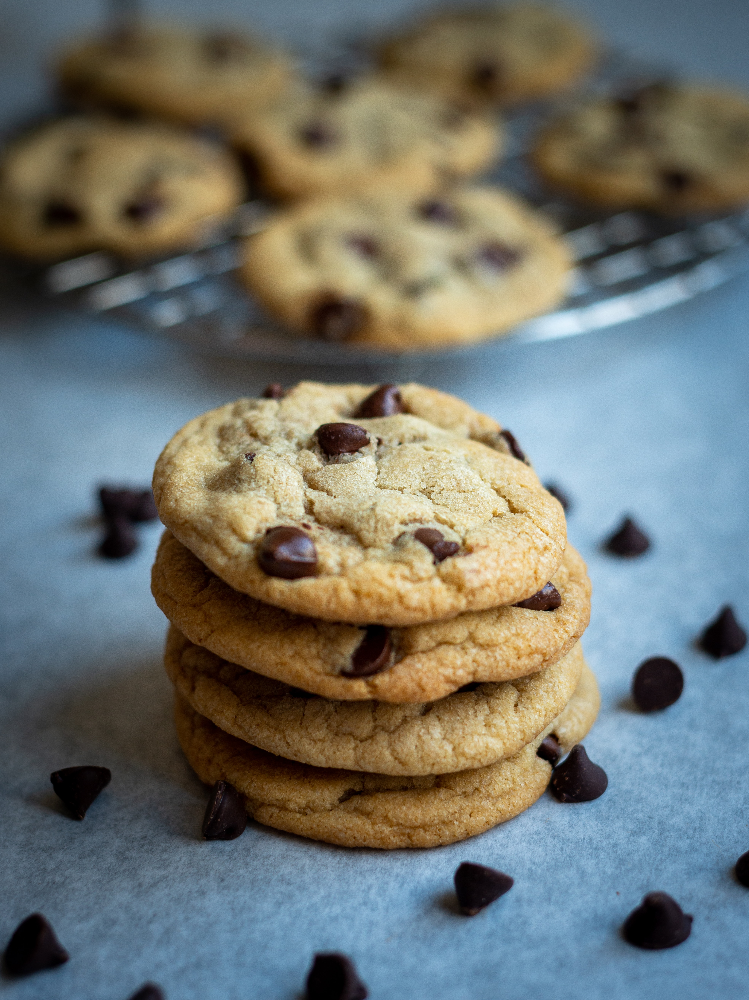

Chocolate Chip Cookies

A chocolate chip cookie is a sweet baked treat that is recognized by its
butter flavour and the inclusion of chocolate chips. Some varations
can include oatmeal, nuts or raisins.
The original recipe for the chocolate chip cookie was created in the
late 1930s by Ruth Wakefield in Whitman, Massachusetts.
Ingredients
- 280g of all-purpose flour
- 1 tsp baking soda
- 1/2 tsp salt
- 1 egg
- 1 tsp vanilla extract
- 170g unsalted melted butter
- 150g brown sugar
- 100g granulated sugar
- 225g chocolate chips or chunks
Steps
- In a large bowl, mix the flour, baking soda and salt. Set aside.
- In a medium bowl, mix in the flour, melted butter, brown sugar, egg and granulated sugar. Finally, mix in the vanilla extract.
- Pour the mixture from the medium bowl into the large bowl that contains the dry mixture and stir together. The dough will be thick and and very soft.
- Add in the chocolate chips into the bowl and stir.
- Cover the dough tightly and let it chill in the refrigerator for at least 2-3 hours or up to 3 days.
- Preheat the oven to 175°C.
- Line a large baking tray with parchment paper.
- Using a cookie scoop or tablespoon, scoop a piece of the dough and roll into a ball on the baking tray. Repeat with the remaining dough. Make sure that each piece of dough is
2 inches apart.
- Bake for 10-13 minutes or until the cookies are light brown. The centers will be soft.
- Take out the cookies and let them cool completely.